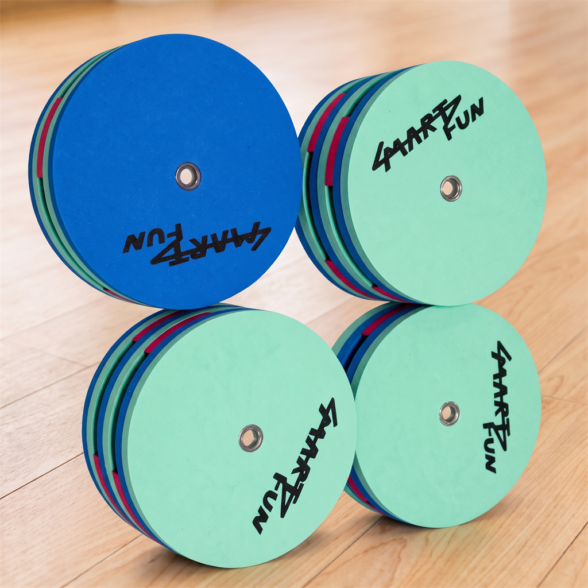
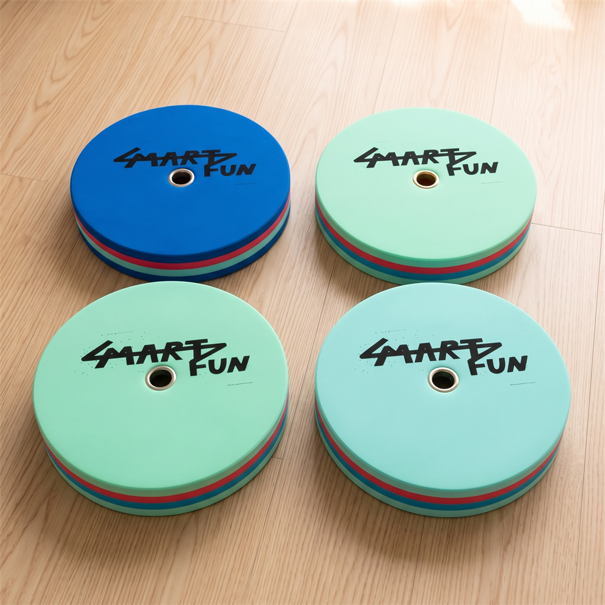

瑪卡龍 (p06) AI 重繪修正前後歷程
記錄「瑪卡龍（圓形平衡踏石）」從去背棚拍照、初版色彩漂白誤區，到雙圖鎖定寶藍色彩與平整俯視木地板的演進過程。
0. 攝影棚拍去背原照
原始素材
真實外觀特徵：4 塊多層夾心厚泡棉圓盤，呈 2×2 矩陣平鋪在地面。
關鍵色彩配比：左上方 1 塊為鮮明搶眼的深寶藍色，其餘 3 塊為清爽明亮的薄荷淺綠色。側面具紅白藍夾層，中央帶金屬提環與 SMART FUN Logo。
相機視角：約 45°~50° 中高俯角拍攝。
1. 修正前初版：色彩嚴重漂白與斜坡滑梯感
存在嚴重問題
問題一（色彩漂白）：左上方原本應為深寶藍色的圓盤，被 AI 漂白成暗灰粉紫肉色（RGB 205, 191, 198），完全失真！
問題二（滑梯透視）：木地板透視線過度急遽向遠方匯聚，使地面看起來像前傾的斜坡，後排圓盤像要順著滑梯溜下來。
問題三（陰影懸空）：圓盤底緣缺少環境遮蔽（AO）深色接觸陰影，像浮貼的貼紙，缺乏 10cm 厚泡棉實體重量感。
2. 修正後定案版：雙圖鎖定寶藍與平平整整木地板
定案發布版
色彩精準還原：採用雙圖參考，嚴格強制約束色彩——左上方深寶藍色飽滿濃郁，其餘三塊薄荷綠清爽明亮，紅藍側夾層與中心金屬環清晰可辨！
平整俯視透視：相機維持 45° 俯角，消除斜坡透視線，整面自然溫潤的淺色橡木地板平整鋪展。
扎實接觸陰影：圓盤下方帶有深沉自然的環境遮蔽陰影，厚重穩固壓在地面上，物理重量感十足。
💡 AI 重繪關鍵經驗總結
- 色彩多樣性保護：當教具包含不同色塊（如本例 1 藍 + 3 綠）時，AI 容易偷懶將色彩均質化或錯誤互染。必須在提示詞中明確指派「每個方位的獨立色相」，並嚴禁漂白。
- 俯拍地面透視：平鋪在地板上的教具，視野應全部由平整地面覆蓋，切忌強加急遽匯聚的牆面或透視線，以避免視覺產生「斜坡溜滑梯」的失重感。
- 重量感來自接觸面：實體物件壓在地面上，底緣必有 2–5mm 極深之環境遮蔽（AO）陰影，此接觸陰影是破除「AI 浮空假圖感」的最關鍵細節。